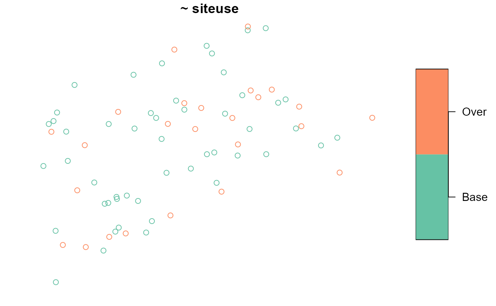

vignettes/sampling.Rmd
sampling.RmdIf you have yet not read the “Start Here” vignette, please do so by running
vignette("start-here", "spsurvey")The Generalized Random Tessellation Stratified (GRTS) algorithm
(Stevens and Olsen, 2004, Olsen et.al., 2012) is a spatially balanced
sampling algorithm available in spsurvey. The GRTS algorithm is used to
sample from finite populations (point resources – e.g. lakes treated as
a whole) and infinite populations (linear resources – e.g. rivers and
streams; areal resources – e.g. wetlands and coastlines) and is
implemented in spsurvey using the grts() function. The
output from grts() contains the design sites and additional
information about the sampling design. More specifically, it is a list
with five elements:
sites_legacy: legacy sites included in the base (main)
sample (see Legacy sampling)sites_base: sites included in the base (main) sample
that are not legacy sitessites_over: replacement sites obtained using reverse
hierarchical ordering (see Reverse hierarchical
ordering)sites_near: replacement sites obtained using nearest
neighbor (see Nearest neighbor)design: a list detailing the sampling designWe use the NE_Lakes sampling frame in spsurvey to
introduce spatially balanced sampling via the GRTS algorithm.
NE_Lakes is a finite sampling frame and contains lakes
(treated as a whole) from the Northeastern United States. There are a
few variables in NE_Lakes you will throughout this
vignette:
AREA: lake area in hectaresAREA_CAT: lake area categories (small and large)ELEV_CAT: lake elevation categories (low and high)Before proceeding, we load spsurvey and set a reproducible seed by running
To select an unstratified GRTS sample where each site in the sampling frame has an equal probability of selection (i.e. inclusion probability), run
eqprob <- grts(NE_Lakes, n_base = 50)The first argument to grts() is the sampling frame,
which must be an sf object. The second argument is
n_base, which specifies the number of sites in the base
(main) sample. The sites_base object in eqprob
is an sf object and contains the original columns of
NE_Lakes as well as a few additional columns such as a site
identifier, latitude and longitude coordinates, inclusion probabilities,
and design weights (to be used in analyses after collecting data).
To print a summary of site counts, run
eqprob
#> Summary of Site Counts:
#>
#> total siteuse
#> total:50 Base:50To visualize the design sites overlain onto the sampling frame, run
The key.width argument extends the plot’s margin to fit
the legend text nicely within the plot. sp_plot() can
equivalently be used in place of plot()
(sp_plot() is currently maintained for backwards
compatibility with previous spsurvey versions).
To select an unstratified GRTS sample where each site in the sampling frame has unequal inclusion probabilities according to some categorical variable, run
caty_n <- c(small = 40, large = 10)
uneqprob <- grts(
NE_Lakes,
n_base = 50,
caty_var = "AREA_CAT",
caty_n = caty_n
)
uneqprob
#> Summary of Site Counts:
#>
#> siteuse by total:
#> Base
#> total 50
#>
#> siteuse by caty:
#> Base
#> large 10
#> small 40caty_var is the unequal inclusion probability variable
("AREA_CAT" in NE_Lakes), and
caty_n is a vector whose names are the levels in
caty_var and whose values are the expected sample sizes in
each category (the sum of these expected samples sizes must equal
n_base). In this sample, inclusion probabilities are
adjusted so that on average, there are 40 small lakes and 10 large lakes
selected.
To select an unstratified GRTS sample where each site in the sampling frame has inclusion probability proportional to a positive, continuous variable, run
propprob <- grts(
NE_Lakes,
n_base = 50,
aux_var = "AREA"
)aux_var is the proportional probability (auxiliary)
variable ("AREA" in NE_Lakes). Proportional
(to size) inclusion probabilities are useful because they can increase
the precision of estimates when the response variable is positively
correlated with the proportional probability variable.
Stratified sampling designs partition the sampling frame into distinct groups called strata and sites are selected within each stratum independently of other strata. Stratified sampling is useful from a practical perspective because it allows for stratum-specific sample sizes and implementation practices (e.g. each stratum may have different sampling protocols). Stratified sampling is useful from a statistical perspective because estimates from stratified samples tend to be more precise than estimates from unstratified samples.
To select a sample stratified by elevation category with equal inclusion probabilities in each stratum, run
strata_n <- c(low = 25, high = 15)
strat_eqprob <- grts(NE_Lakes, n_base = strata_n, stratum_var = "ELEV_CAT")
strat_eqprob
#> Summary of Site Counts:
#>
#> siteuse by total:
#> Base
#> total 40
#>
#> siteuse by stratum:
#> Base
#> high 15
#> low 25strata_n is a named vector whose names represent the
strata and whose values represent strata-specific sample sizes, and
stratum_var is the stratification variable
(ELEV_CAT in NE_Lakes).
To visualize the design sites overlain onto the sampling frame (separately for each stratum), run
To select a sample stratified by elevation category with unequal inclusion probabilities for each area category, run
caty_n <- list(
low = c(small = 20, large = 5),
high = c(small = 10, large = 5)
)
strat_uneqprob <- grts(
NE_Lakes,
n_base = strata_n,
stratum_var = "ELEV_CAT",
caty_var = "AREA_CAT",
caty_n = caty_n
)
strat_uneqprob
#> Summary of Site Counts:
#>
#> siteuse by total:
#> Base
#> total 40
#>
#> siteuse by stratum:
#> Base
#> high 15
#> low 25
#>
#> siteuse by caty:
#> Base
#> large 9
#> small 31
#>
#> siteuse by stratum:caty:
#> Base
#> high:large 3
#> low:large 6
#> high:small 12
#> low:small 19caty_n is now a list: the first element contains the
expected sample sizes for each area category in the low elevation
stratum, and the second element contains the expected sample sizes for
each area category in the high elevation stratum.
To select a sample stratified by elevation category with probabilities proportional to lake area, run
strat_propprob <- grts(
NE_Lakes,
n_base = strata_n,
stratum_var = "ELEV_CAT",
aux_var = "AREA"
)Legacy (historical) sites are sites that were selected from a
previous sampling design that incorporated randomness into site
selection, are part of the sampling frame for the current sampling
design, and should be always be selected in the current sample. The
NE_Lakes_Legacy data contains some legacy sites. To
accommodate these legacy sites while sampling, use the
legacy_sites argument:
legacy <- grts(NE_Lakes, n_base = 50, legacy_sites = NE_Lakes_Legacy)
legacy
#> Summary of Site Counts:
#>
#> total siteuse
#> total:50 Legacy: 5
#> Base :45To visualize the legacy and base sites together, run
These points can be overlain onto the sampling frame by including
NE_Lakes in the plot() command.
Legacy sites are included in the base (main) sample, so the value for
n_base should be equal to the number of legacy sites plus
the number of non-legacy sites desired in the sample. If your sampling
design uses stratification, unequal inclusion probabilities, or
proportional inclusion probabilities, you need to name the column in
legacy_sites that represents these values. By default,
grts() assumes that the respective columns in
sframe and legacy_sites share the same name –
if this is not the case, use the legacy_stratum_var,
legacy_caty_var or legacy_aux_var arguments.
If your population is finite, you may alternatively accommodate legacy
sites by including a variable in your sampling frame that indicates
whether each site is a legacy site or not and then use the
legacy_var argument in grts(). When using
legacy_var, you do not need to use
legacy_stratum_var, legacy_caty_var or
legacy_aux_var.
Another legacy site example is provided in Infinite Population Sampling.
Though the GRTS algorithm selects spatially balanced samples, the algorithm can select sites that are closer together than you may desire. To enforce a minimum distance between sites, run
mindis <- grts(NE_Lakes, n_base = 50, mindis = 1600)Here we have specified that sites be no closer together than 1600
meters (meters are the units of the sf object). In some
situations, the grts() function will fail to enforce the
minimum distance requirement for all sites. When this occurs, the
function will enforce the requirement for as many sites as possible and
then return a warning.
When stratifying, mindis will apply to all strata if it
is a single value. It is possible to set stratum-specific minimum
distance requirements by storing them in a named list (the names must
match the strata):
Sometimes data cannot be collected at a site. This may occur for a
variety of reasons, some of which include landowner denial or
inaccessible sites. The grts() function has two options for
selecting replacement sites, which are sites available to replace sites
in the base (main) sample for which data cannot be collected.
The first replacement site option is reverse hierarchical ordering (Stevens and Olsen, 2004). To select a base sample with reverse hierarchically ordered replacement sites, run
rho_replace <- grts(NE_Lakes, n_base = 50, n_over = 25)
rho_replace
#> Summary of Site Counts:
#>
#> total siteuse
#> total:75 Base:50
#> Over:25n_base indicates the desired sample size, and
n_over indicates the number of replacement sites. Sites are
first selected using the GRTS algorithm for a sample size of
n_base + n_over. They are then determined as base sites or
replacement sites in a way that preserves as much spatial balance as
possible. The spatial balance of the base sites degrades as
n_over increases, however, so it is important to choose a
realistic value for n_over.
To visualize the base sites and reverse hierarchically ordered replacement sites, run

When stratifying, n_over will apply to all strata if it
is a single value. It is possible to set stratum-specific reverse
hierarchical ordering requirements by storing them in a named list (the
names must match the strata):
The second replacement site option is nearest neighbor. To select a base sample with nearest neighbor replacement sites, run
nn_replace <- grts(NE_Lakes, n_base = 50, n_near = 1)
nn_replace
#> Summary of Site Counts:
#>
#> total siteuse
#> total:100 Base:50
#> Near:50n_base indicates the desired sample size, and
n_near indicates the number of replacement sites for each
base site. For n_near = 1, each site in the base sample has
a replacement site associated with it – this replacement site is the
closest site (measured by Euclidean distance) to the base site (within a
stratum).
When stratifying, n_near will apply to all strata if it
is a single value. It is possible to set stratum-specific nearest
neighbor requirements by storing them in a named list (the names must
match the strata):
If you want to select samples that are not spatially balanced, use
spsurvey’s irs() function (IRS is for Independent Random
Sampling). The function arguments for the irs() function
are the same as the function arguments for the grts()
function. This means that the flexible sampling design options available
for the GRTS algorithm are also available for the IRS algorithm. To
select an unstratified IRS sample where each site in the sampling frame
has an equal inclusion probability, run
eqprob_irs <- irs(NE_Lakes, n_base = 50)
eqprob_irs
#> Summary of Site Counts:
#>
#> total siteuse
#> total:50 Base:50To visualize the design sites, run
Notice how these IRS design sites appear less spread out than the design sites from the unstratified GRTS sample with equal inclusion probabilities.
To select an IRS sample stratified by elevation category with equal inclusion probabilities in each stratum, run
So far we have talked generally about spatial balance but not about how to measure it. Stevens and Olsen (2004) proposed measuring spatial balance using Voronoi polygons. A design site’s Voronoi polygon contains all sites in the sampling frame closer to this design site than any other design site. To measure spatial balance, these Voronoi polygons are combined with the inclusion probabilities of all sites in the sampling frame and a loss metric.
Several spatial balance metrics are available in spsurvey. The default is Pielou’s evenness index. Pielou’s evenness index ranges from 0 (perfect spatial balance) to 1 (a complete lack of spatial balance). Larger values of the Pielou’s evenness index indicate worse spatial balance. To measure the spatial balance of the unstratified GRTS and IRS samples with equal inclusion probabilities, run
sp_balance(eqprob$sites_base, NE_Lakes) # grts
#> stratum metric value
#> 1 None pielou 0.02585831
sp_balance(eqprob_irs$sites_base, NE_Lakes) # irs
#> stratum metric value
#> 1 None pielou 0.03823327The GRTS design sites are more spatially balanced than the IRS design sites.
In a stratified sample, spatial balance is calculated separately for each stratum:
sp_balance(strat_eqprob$sites_base, NE_Lakes, stratum_var = "ELEV_CAT") # grts
#> stratum metric value
#> 1 low pielou 0.03680620
#> 2 high pielou 0.04543609
sp_balance(strat_eqprob_irs$sites_base, NE_Lakes, stratum_var = "ELEV_CAT") # irs
#> stratum metric value
#> 1 low pielou 0.0415444
#> 2 high pielou 0.1171086The GRTS design sites are more spatially balanced than the IRS design sites in both strata.
Though this vignette used a finite population (NE_Lakes)
to illustrate the sampling options available in spsurvey, the same
commands are used to sample from infinite populations. The
Illinois_River sf object in spsurvey is a
linear resource and the Lake_Ontario sf object
in spsurvey is an areal resource – both are examples of infinite
populations. To select a GRTS sample with equal inclusion probabilities
from Illinois_River, run
eqprob <- grts(Illinois_River, n_base = 50)To visualize the design sites overlain onto the sampling frame, run
To accommodate the Illinois River legacy sites, run:
legacy <- grts(Illinois_River, n_base = 50, legacy_sites = Illinois_River_Legacy)To select a GRTS sample with equal inclusion probabilities from
Lake_Ontario, run
eqprob <- grts(Lake_Ontario, n_base = 50)To visualize the design sites (with closed circles) overlain onto the sampling frame, run
To bind sites_legacy, sites_base,
sites_over, sites_near (four separate
sf objects) into a single sf object, use
sp_rbind(). For example, to combine the base and reverse
hierarchically ordered replacement sites from rho_replace
into a single sf object, run
combined <- sp_rbind(rho_replace)Then it is straightforward to write out a single sf
object using a function like sf::write_sf(). For example,
to save the combined sf object as a shapefile named
"file_name.shp" at the location on your machine called
"file_path", run
write_sf(combined, "file_path/file_name.shp")Olsen, A. R., T. M. Kincaid and Q. Payton (2012). Spatially balanced survey designs for natural resources. Design and Analysis of Long-Term Ecological Monitoring Studies. R. A. Gitzen, J. J. Millspaugh, A. B. Cooper and D. S. Licht. Cambridge, UK, Cambridge University Press: 126-150.
Stevens Jr, D. L. and Olsen, A. R. (2004). Spatially balanced sampling of natural resources. Journal of the American Statistical Association, 99(465):262-278.